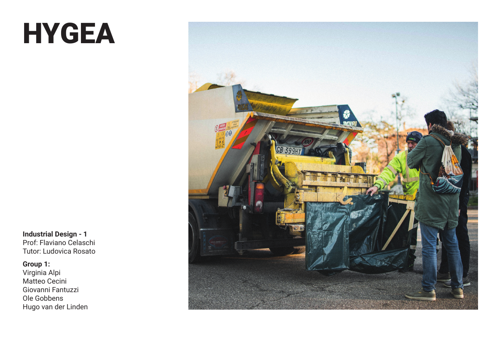
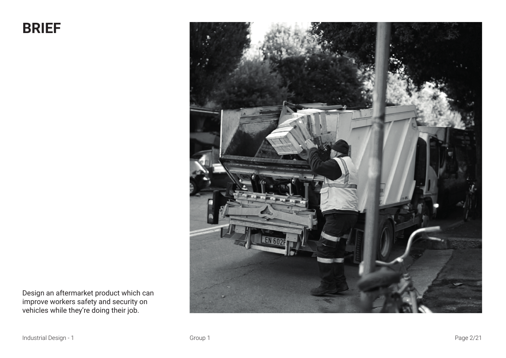
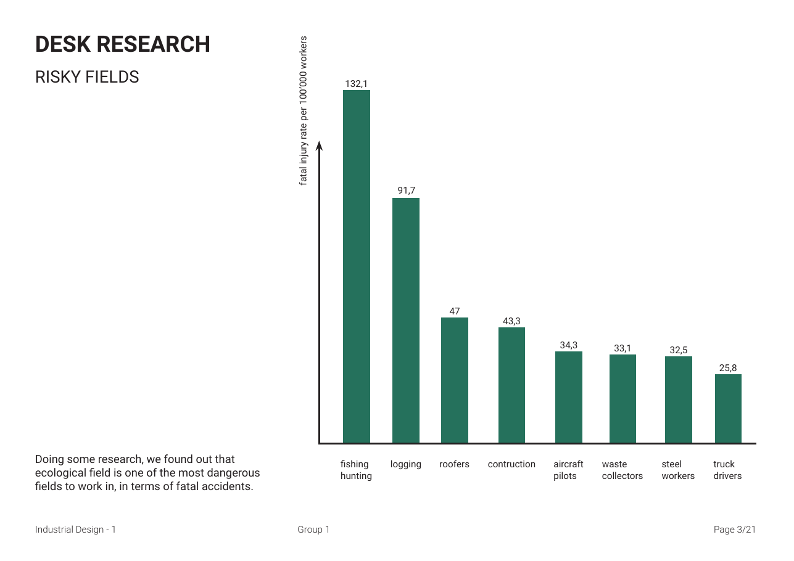

2022 · University of Bologna
Hygea.
A team concept to improve safety and security for waste-collection workers and their vehicles.
Designed for
safer work.
Developed during the Industrial Design 1 exchange course at the University of Bologna, Hygea explores an aftermarket intervention for waste-collection vehicles.
Field and desk research shaped the concept around the practical risks workers encounter while collecting waste.
RoleExchange team project
ContextUniversity of Bologna
FocusVehicle safety and security

